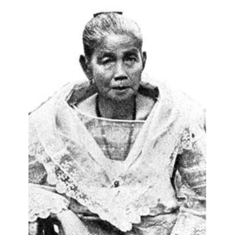
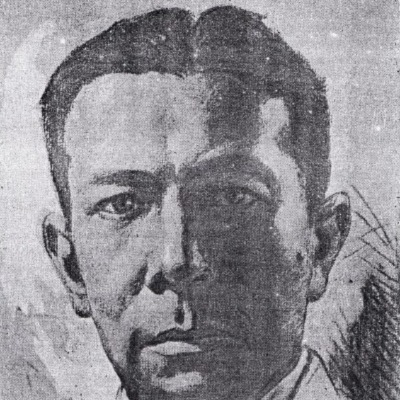
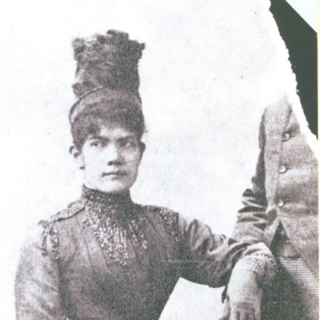

Juan Luna y Novicio

Juan Luna de San Pedro y Novicio Ancheta was a Filipino painter, sculptor and a political activist of the Philippine Revolution during the late 19th century. He became one of the first recognized Philippine artists. His winning the gold medal in the 1884 Madrid Exposition of Fine Arts , along with the silver win of fellow Filipino painter Félix Resurrección Hidalgo, prompted a celebration which was a major highlight in the memoirs of members of the Propaganda Movement. Luna painted literary and historical scenes, some with an underscore of political commentary. His allegorical works were inspired with classical balance, and often showed figures in theatrical poses.
Family Tree

Doña Laureana Novicio
(Mother)

Don Joaquin Luna
(Father)

Antonio Luna y Novicio
(Brother)

Maria de la Paz Pardo
(Wife)